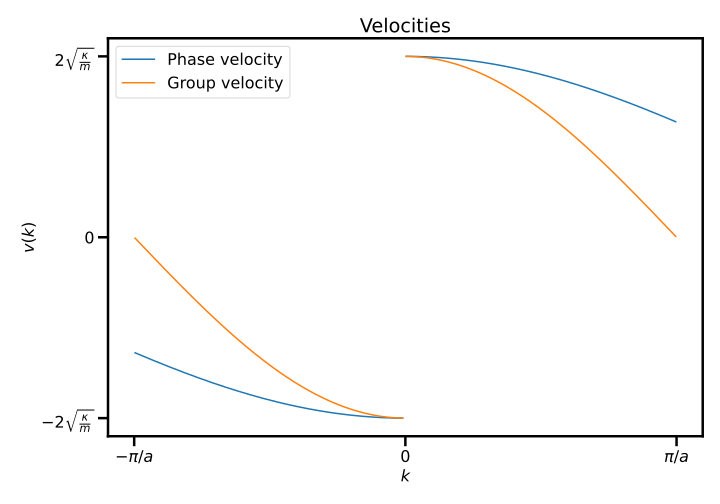
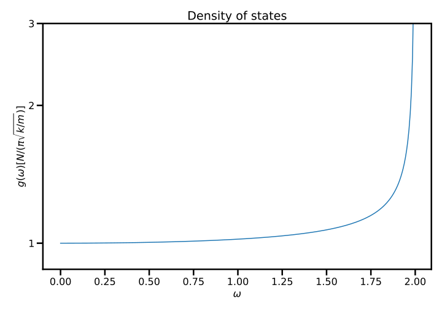

Assignment 2: Bonding and harmonic chains¶
The second assignment can be found here.
Exercise 1 - Bonding: not LCAO¶
-
In you own words, explain why ionic bonds occur, and what properties one would expect from and ionic solid.
Ionic bonds occur as an electron is transferred from one atom to another, and the resulting ions attract each other. Typical properties are due to the nature of the bond being very strong, with materials having high melting temperatures, and usually being hard, brittle, and electrically insulating. They are also mostly soluble, but this is not of so much relevance here.
-
The (first) ionisation energy of sodium is roughly , and the electron affinity of chlorine is roughly , and the bond length between the two atoms when a sodium chloride molecule is formed is roughly . Assuming that all of the cohesive energy is due to the Coulomb interaction, calculate the bonding energy.
The cohesive energy is related to the bond distance via
Using the value one finds a cohesive enrgy of and thus the total binding energy is
-
The measured value of the bonding energy of sodium chloride is . How does this compare to your value above? Justify your response.
The calculated value above is slightly larger than the measured value with the reason for the discrepancy being there must be a repulsive fore between the ions (otherwise the would collapse into a singularity!) in addition to the Coulomb attraction, therefore reducing the size of the cohesive (binding) energy.
-
In our discussion of bonding, we did not explicitly discuss van der Waals bonding. Research what is the nature of the van der Waals bond, explicitly describing the origin of the attractive force formation and reason as to why the force is of the form
Van der Waals forces are from correlated dipole fluctuations. If the electron is a given fixed position, there is a dipole moment where is the vector from the electron to the proton. With the electron "orbiting" (i.e, in an eigenstate), the average dipole moment is zero. However, if an electric field is applied to the atom, the atom will develop a polarisation (i.e., it will be more likely for the electron to be found on one side of the nucleus than on the other). We write
with the polarisability. Now, let us suppose we have two such atoms, separated a distance in the direction. Suppose one atom momentarily has a dipole moment (for definiteness, suppose this dipole moment is in the direction). Then the second atom will feel an electric field
in the negative direction. The second atom then, due to its polarisability, develops a dipole moment which in turn is attracted to the first atom. The potential energy between these two dipoles is
corresponding to a force which is attractive and proportional to . Note that while for a single isolated atom the result is proportional instead to with r the position of an electron, is nonzero.
Exercise 2 - Bonding: LCAO¶
In our formulation of the LCAO formulation we assumed that orbitals were orthogonal, with the justification that the qualitative behaviour was still going to be fine.
Assume that we introduce a trial wavefunction:
however, we are not going to enforce that the state be orthogonal. Rather, we define an overlap matrix with elements
-
Show that with the above conditions, one arrives at an effective Schrödinger equation
where
and is the vector of the coefficients for the .
This is the variational method 101. It is necessary to compute through
which must then be minimised with respect to the . This is most simply done by differentiating with respect to and solving for the root(s):
where we have used the definition of above to simplify the 2nd term in the top line. This is exactly the result required.
-
Consider the case where N=2 (i.e. the diatomic case) and the orbitals are () orbitals. Use the above equation to solve for the energy eigenvalues of the system.
Firstly, the reason we consider states is because an orbital can be taken to be manifestly positive everywhere (it has no nodes), so overlaps must be real and positive, making life a little easier.
In order to solve the equation
it is simplest to solve the eigenvalue problem
As we normally do, we write the Hamiltonian as
with the hopping and , and the overlap matrix is just
where we have defined the only non-trivial element . We then need to diagonalise
which has eigenvalues
Exercise 3 - Quantum thermal expansion¶
In a content unpacking session, we discussed thermal expansion arising from the anharmonic term in the interatomic potential. Assume masses and for the interacting particles and let's consider an anharmonic perturbation
to the one-dimensional quantum harmonic oscillator :
To first order in , it can be shown that
where is the eigenstate of the harmonic oscillator with
-
What is the value of in terms of and ?
The relationship between frequency and mass for a harmonic oscillator is
and given our system is comprised of two masses and , we should use the reduced mass :
-
What is the interpretation of the state?
The state is the ground state of the harmonic oscillator, which has some notable features, but most relevant is that the energy is not equal to the minimum of the potential, but rather above the minimum, and therefore the will be fluctuations in both the position and momentum of the trapped particle around the minimum which is what gives rise to the average separation of atoms.
-
The expectation value of as a function of temperature is written as
-
Find the coefficient of thermal expansion
Just crank the handle:
where is the energy expectation of a harmonic oscillator of frequency at temperature . It is fine to use the result that directly:
but this can be derived easily enough from the partition function:
Combining the above equations one arrives at
and then the coefficient of thermal expansion is then
The term is identified as the specific heat , and the specific heat of the a harmonic oscillator was covered when discussing the Einstein model of a solid, but can be calculated directly from the equation for to yield
-
What is the behaviour of the coefficient at both high and low temperature, and comment on the physical significance of these results.
In the low-temperature limit, the modes "freeze" out, entirely analogous to the specific heat dropping out at low temperature (there needs to be a minimum energy put into the system to enact change because of the quantised states of the harmonic oscillator).
In the high-temperature limit, so one obtains
in agreement with the classical result, and this result is valid when
-
Exercise 4 - One-dimensional oscillations¶
-
Explain what is meant by a normal mode and a phonon
A normal mode is a periodic collective motion where all particles move at the same frequency. A phonon is a quantum of vibration.
People tend to be confused by phonons, so to explicitly connect the two and explain why phonons are bosons: each classical normal mode of vibration corresponds to a quantum mode of vibration which can be excited multiple times. A single mode may be occupied by a single phonon, or it may be occupied with multiple phonons corresponding to a larger amplitude oscillation. The fact that the same state may be multiply occupied by phonons means that phonons must be bosons.
-
Derive the dispersion relation for longitudinal oscillations of an infinite one-dimensional chain of identical atoms, assuming mass , spring constant , and lattice spacing
The equation of motion of the particle along the chain is given by
where is the equilibrium position of the particle. Looking for solutions of the form
one obtains
which can be recast as
-
Show that a the mode with wavevector is equivalent to the mode
-
Assuming periodic boundary conditions, how many different modes are there?
If one assumes periodic boundary conditions, then , but is identified with so that there are therefore exactly different normal modes.
-
Find expressions for and plot both the group and phase velocities
The phase velocity is calculated via
and the group velocity is
where .
To plot this, code such as that below
kappa = 1 m = 1 a = 1 def omega(k): return 2 * np.sqrt(kappa/m) * abs(np.sin(k * a / 2)) def v_p(k): return omega(k)/k def v_g(k): omega_0 = 2 * np.sqrt(kappa/m) return omega_0 * (a/2) * np.sqrt(1 - (omega(k)/omega_0) ** 2) fig, ax = plt.subplots() k = np.linspace(-np.pi+0.01, np.pi-0.01, 300) ax.plot(k[0:149], v_p(k[0:149]), color = 'C0', label = 'Phase velocity'); ax.plot(k[150:300], v_p(k[150:300]), color = 'C0'); ax.plot(k[0:149], -v_g(k[0:149]), color = 'C1', label = 'Group velocity'); ax.plot(k[150:300], v_g(k[150:300]), color = 'C1'); ax.set_title('Velocities') ax.set_xlabel(r'$k$'); ax.set_ylabel('$v(k)$'); plt.xticks([-np.pi, 0, np.pi], [r'$-\pi/a$', 0, r'$\pi/a$']); plt.yticks([-1, 0, 1], [r'$-2\sqrt{\frac{\kappa}{m}}$', 0, r'$2\sqrt{\frac{\kappa}{m}}$']); plt.legend(); plt.tight_layout(); plt.savefig('A2-4-v.pdf', facecolor='white', transparent=False) plt.show()will yield this plot:

-
Find an expression for the density of states and plot
The density of states is uniform in : if there are sites in the system, there are modes total and the density of states is therefore where is the length of the system. We then have
where we have used
where in turn we have used the equation for the group velocity (previous question) to obtain the above identity.
Note that the additional factor of 2 that appears in the numerator is to account for the fact that for each value of there are actually two values of with that , to ensure that if you integrate over frequency you correctly get back degrees of freedom.

The above plot was produced using the code below
N = 1 fig, ax = plt.subplots() w = np.linspace(0, np.pi/a - 1.15, 300); g = (2*N)/(2 * np.pi * np.sqrt((kappa/m)-(w/2)**2)); ax.plot(w, g, 'C0'); ax.set_xlabel(r'$\omega$'); ax.set_ylabel('$g(\omega) [N/(\pi \sqrt{k/m})]$'); ax.set_title('Density of states') plt.yticks([N/(np.pi * np.sqrt(kappa/m)), 2, 3], [1, 2, 3]); ax.set_ylim(0,3) plt.tight_layout(); plt.savefig('A2-4-dos.pdf', facecolor='white', transparent=False) plt.show() -
Using , find an expression for the heat capacity and use any tools at your disposal to plot the heat capacity versus temperature
The energy stored in the chain is given by
and so the heat capacity is . The factor of 1/2 can be ignored as it is a temperature independent constant and thus will vanish upon differentiation.
Plotting this requires numerical integration of the above equation, and one should get a plot similar to that as shown below, with the values on the axis changing with the parameters , , and .
Code to perform the numerical integration appears below, with the highlighted lines actually performing the integration
a = 1e-10 def integrand(w): b = 1/T nb = 1/(np.exp(b * w) - 1) g = (2*N)/(2 * np.pi * np.sqrt((kappa/m)-(w/2)**2)) return g * w * nb temp = np.linspace(0.01, 5, 150) U = [] for T in temp: U.append(integrate.quad(integrand, 0, 2*np.sqrt(kappa/m))[0]) dt = temp[1]-temp[0] dudt = np.gradient(U, dt) fig, ax = plt.subplots() ax.plot(temp, dudt) ax.set_xlabel('$T$ [K]') ax.set_ylabel('$C/k_\mathrm{B}$') ax.set_title('Specific heat') plt.savefig('A2-4-c.pdf', facecolor='white', transparent=False) plt.show()the output of which is shown here: